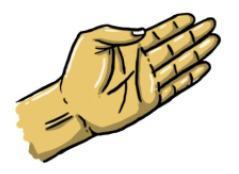
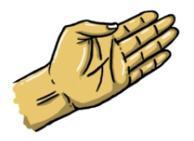

Official Rules of Rock Paper Scissors
Rock Paper Scissors is a zero sum game that is usually played by two people using their hands and no tools. The idea is to make shapes with an outstretched hand where each shape will have a certain degree of power and will lead to an outcome.
 


Rock
Paper
Scissor
Although the game has a lot of complexity to it, the rules to play it are pretty simple. The game is played where players deliver hand signals that will represent the elements of the game; rock, paper and scissors. The outcome of the game is determined by 3 simple rules:
- Rock wins against scissors.
- Scissors win against paper.
- Paper wins against rock